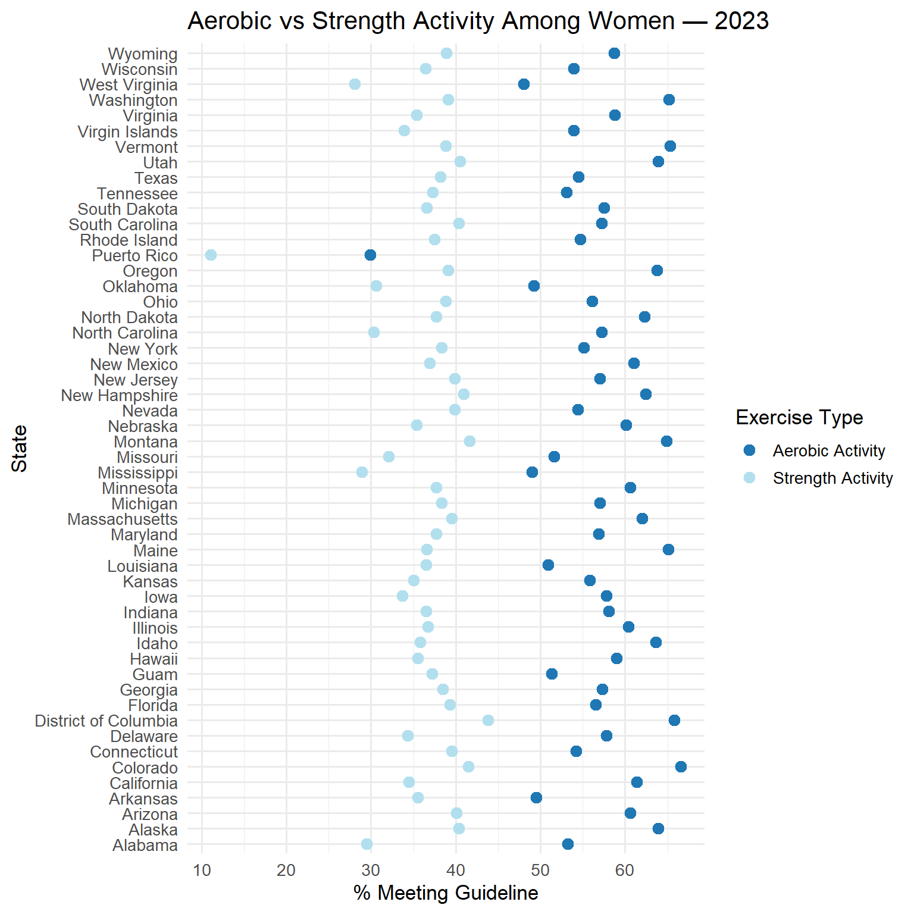
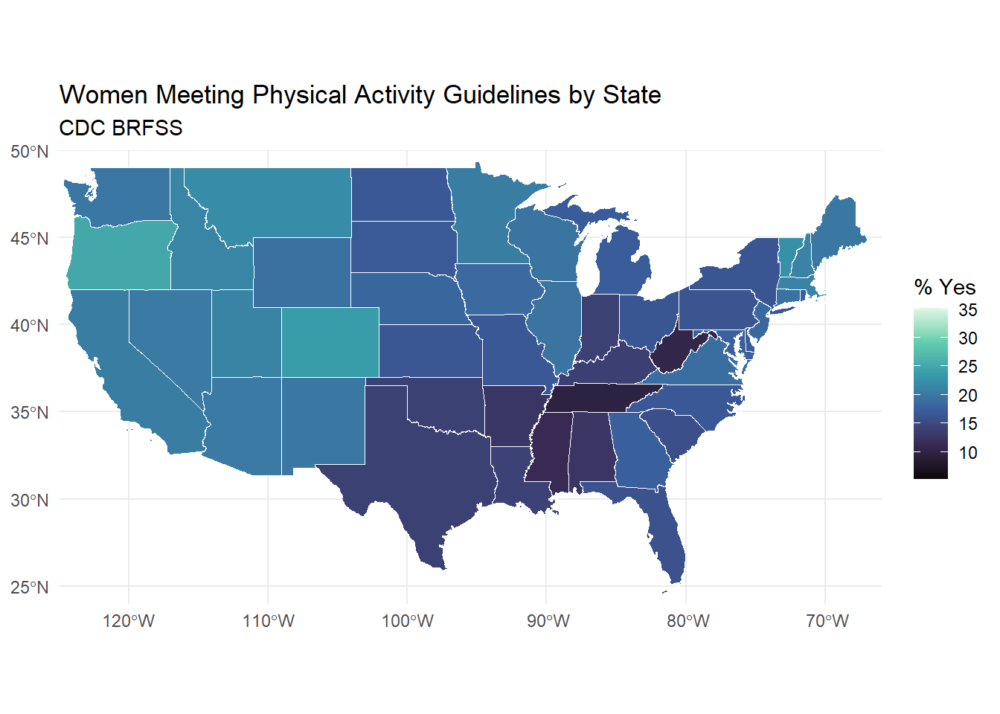
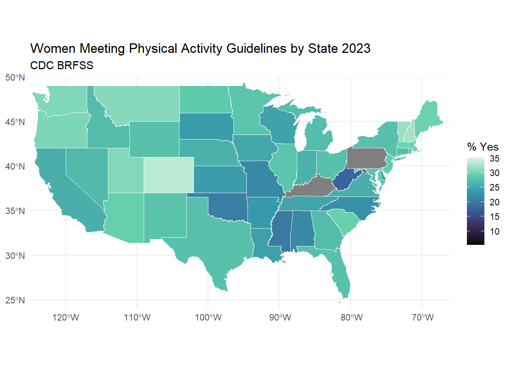

Code
library(dplyr)
library(ggplot2)
library(ggridges)
library(sf)
library(tigris)
nhanes_women <- read.csv("nhanes_women.csv")
women_brf <- read.csv("women_brf.csv")library(dplyr)
library(ggplot2)
library(ggridges)
library(sf)
library(tigris)
nhanes_women <- read.csv("nhanes_women.csv")
women_brf <- read.csv("women_brf.csv")I started with some more general graphs to get a sense for the distribution of BMI and age groups of the NHANES survey respondents. I was very surprised by the wide range of respondents. I didn’t grasp at first the breadth of the survey. I thought this survey was more to guage the adult population but seeing they even conducted portions with infants also helps explain why there is so much missing data, because many questions won’t be applicable to certain portions of the population included.
ggplot(nhanes_women, aes(x = age, fill = cycle)) +
geom_density(alpha = 0.4) +
labs(
title = "Age Distribution of Women by NHANES Cycle",
x = "Age (years)",
y = "Density"
) +
theme_minimal(base_size = 13)
ggplot(nhanes_women, aes(x = age, fill = cycle)) +
geom_histogram(
color = "blue",
fill = "lightblue",
binwidth = 2,
boundary = 0
) +
facet_wrap(~ cycle, ncol = 1) +
scale_x_continuous() +
labs(
title = "Age Histogram by NHANES Cycle (Women Only)",
x = "Age (years)",
y = "Count"
) +
theme_minimal(base_size = 13)
After seeing the age distribution and knowing that I wanted to focus my trend analysis on the adult women respondents, I filtered my data for ages 20-50 and plotted the distribution for BMI from there. BMI has slightly increased over the three survey cycles, which I didn’t find completely surprising but it also didn’t quite line up with what I would have expected given the trends I saw in my later analysis.
nhanes_adultw <- nhanes_women |>
filter(
age >= 20,
age <= 50
)
ggplot(nhanes_adultw, aes(x = bmi, fill = cycle)) +
geom_density(alpha = 0.4) +
labs(
title = "BMI Distribution of Women by NHANES Cycle",
x = "BMI",
y = "Density"
) +
theme_minimal(base_size = 13)
However, when we break out BMI by age group, we actually see that it stays relatively stable across each group. But as women age we see slightly higher BMI and more variability in respondents.
nhanes_agegroups <- nhanes_adultw |>
filter(
!is.na(age),
age >= 20, age <= 50,
!is.na(sedentary_min_day),
!is.na(bmi)
) |>
mutate(
age_group = case_when(
age <= 30 ~ "20–30",
age <= 40 ~ "31–40",
TRUE ~ "41–50"
)
)
ggplot(nhanes_agegroups, aes(x = age_group, y = bmi)) +
geom_boxplot(fill = "#d3e5ff", alpha = 0.8, outlier.alpha = 0.5) +
facet_wrap(~ cycle) +
labs(
x = "Age Group",
y = "BMI",
title = "BMI Across Age Groups and NHANES Cycles (Women)"
) +
theme_minimal() +
theme(
plot.title = element_text(size = 14, face = "bold"),
axis.text = element_text(size = 11),
strip.text = element_text(size = 11, face = "bold")
)
I wanted to see what this relationship looked like if I expanded the age group back to the original group of respondents. Since there were a large number of data points, I selected a sample of 500 to keep the visual clean while still visually seeing the trend. I also added a loess smoother on top of the graph to aid the visualization. Not surprisingly, we see bmi increase through childhood to adulthood, a slight uptick from 30-50 as seen in the boxplots, then bmi drops off again as women pass the age of 60.
set.seed(123) # for reproducibility
# Clean + sample 100 points per cycle
nhanes_sampled <- nhanes_agegroups |>
group_by(cycle) |>
slice_sample(n = 500) |>
ungroup()
# Plot: BMI vs Age, faceted by cycle
ggplot(nhanes_sampled, aes(x = age, y = bmi)) +
geom_point(alpha = 0.6, size = 1.8, color = "lightblue3") +
geom_smooth(se = FALSE, method = "loess", color = "black") +
facet_wrap(~ cycle) +
labs(
x = "Age (years)",
y = "BMI",
title = "BMI vs Age Among Women (Random Sample of 500 per NHANES Cycle)"
) +
theme_minimal()
#
# ggplot(nhanes_women,
# aes(x = sedentary_min_day,
# y = bmi)) +
# geom_point(alpha = 0.3, size = 1) +
# facet_wrap(~ cycle, ncol = 1) +
# labs(
# title = "BMI vs. Sedentary Minutes per Day by Cycle",
# x = "Sedentary minutes per day",
# y = "BMI"
# ) +
# theme_minimal(base_size = 13)Next I moved to look at trends in the reported number of sedentary minutes. I first used a heatmap to get a different type of visual. But also created the bar plot across age groups as well. The densist portion of the plot being around 8.5 hours is what I would have expected for adult women, since the majority probably spend 8-9 hours a day working. I would be curious to see how these numbers change if plotted using the original full age group data, since for the age groups I plotted the median stays relatively the same.
ggplot(nhanes_agegroups,
aes(x = sedentary_min_day,
y = bmi)) +
geom_bin2d() +
facet_wrap(~ cycle, ncol = 1) +
scale_fill_viridis_c() +
labs(
title = "BMI vs. Sedentary Time (2D Binned Heatmap)",
x = "Sedentary minutes per day",
y = "BMI",
fill = "Count"
) +
theme_minimal(base_size = 13)
# Boxplot of sedentary minutes by age group
ggplot(nhanes_agegroups, aes(x = age_group, y = sedentary_min_day)) +
geom_boxplot(fill = "#d3e5ff", alpha = 0.8, outlier.alpha = 0.5) +
labs(
x = "Age Group",
y = "Sedentary Minutes per Day",
title = "Sedentary Behavior Across Age Groups in Women (NHANES)"
) +
facet_wrap(~ cycle) +
theme_minimal() +
theme(
plot.title = element_text(size = 14, face = "bold"),
axis.text = element_text(size = 11)
)
I really liked the plot with the loess smoother for BMI across age and was curious to see how the graphs would look for sedentary minutes as well. With this graph we can see the rounding in the responses because the points are plotted across in straight lines for the sedentary minutes.
ggplot(nhanes_sampled, aes(x = age, y = sedentary_min_day)) +
geom_point(alpha = 0.6, size = 1.8, color = "lightblue3") +
geom_smooth(se = FALSE, method = "loess", color = "black") +
facet_wrap(~ cycle) +
labs(
x = "Age (years)",
y = "Sedentary Minutes",
title = "Sedentary Minutes vs Age (Random Sample of 500 per NHANES Cycle)"
) +
theme_minimal()
Moving to look at the infertility question in the survey, I was first interested to see just how many respondents reported issues with getting pregnant. So I started with just a bar chart of responses. I was surprised to see a relatively low rate of “Yes” responses. It was really disappointing that the most recent cycle did not include this question on the survey. I feel like in recent years I have seen so much information on rising infertility rates and more women sharing their struggles online so it would have been nice to see if there was an uptick in the 21-23 cycle.
# Clean + recode infertility response
nhanes_fertility <- nhanes_women |>
filter(
!is.na(infertility_12mo),
age >= 20,
age <= 40
) |>
mutate(
infert_status = case_when(
infertility_12mo == 1 ~ "Yes",
infertility_12mo == 2 ~ "No",
TRUE ~ NA_character_
)
) |>
filter(!is.na(infert_status))
# Faceted bar plot
ggplot(nhanes_fertility, aes(x = infert_status, fill = infert_status)) +
geom_bar(alpha = 0.85) +
facet_wrap(~ cycle) +
scale_fill_manual(values = c("Yes" = "lightblue2", "No" = "#d3e5ff")) +
labs(
x = "Reported Infertility in Last 12 Months",
y = "Count of Women",
title = "Infertility Responses by NHANES Cycle"
) +
theme_minimal() +
theme(
legend.position = "none",
plot.title = element_text(size = 14, face = "bold"),
strip.text = element_text(size = 12, face = "bold")
)
Then I wanted to see how infertility responses looked when plotted against my two other features: sendentary time and BMI to see if there were any visual trends.
ggplot(nhanes_fertility, aes(x = sedentary_min_day, y = infert_status, fill = infert_status)) +
geom_density_ridges(alpha = 0.7, scale = 1.1, rel_min_height = 0.01) +
facet_wrap(~ cycle) +
scale_fill_brewer(palette = "Blues") +
labs(
x = "Sedentary Minutes per Day",
y = "",
title = "Sedentary Minutes (Ages 20–40) by Pregnancy History and NHANES Cycle"
) +
theme_minimal() +
theme(
legend.position = "none",
strip.text = element_text(size = 12, face = "bold")
)
Trying out a violin plot.
ggplot(nhanes_fertility, aes(x = infert_status, y = sedentary_min_day, fill = infert_status)) +
geom_violin(alpha = 0.5) +
geom_boxplot(width = 0.15, alpha = 0.8, outlier.alpha = 0.3) +
scale_fill_manual(values = c("Yes" = "lightblue2", "No" = "#d3e5ff")) +
labs(
x = "Infertility Status",
y = "Sedentary Minutes per Day",
title = "Sedentary Minutes (Ages 20–40) by Pregnancy History and NHANES Cycle"
) +
theme_minimal()
To help link the NHANES data trends to what I wanted to explore using the BRFSS, I plotted the sedentary minutes responses across the years. Here we can see that reported sedentary time has decreased over the last two cycles. Based on this, when I move to explore physical activity levels, I would expect this would correspond to an increase in physical time reported.
nhanes_summary <- nhanes_agegroups |>
filter(!is.na(sedentary_min_day)) |>
group_by(cycle) |>
summarise(
median_sedentary = median(sedentary_min_day, na.rm = TRUE)
) |>
ungroup()
# Line plot
ggplot(nhanes_summary, aes(x = cycle, y = median_sedentary, group = 1)) +
geom_line(color = "#4e79a7", size = 1.3) +
geom_point(size = 3, color = "#4e79a7") +
labs(
title = "Median Sedentary Minutes per Day by NHANES Cycle",
x = "NHANES Cycle",
y = "Median Sedentary Minutes per Day"
) +
theme_minimal()
Moving to work with the BRFSS dataset, my main goal with this was to supplement my analysis of physical activity trends for my original research question. First, I plotted strength training to have a comparison against the previous sedentary time. During the same time that sedentary time has decreased, reported strength training activity has increased.
strength_trend <- women_brf |>
filter(Topic == "Strength Activity") |> # choose strength training
group_by(Year) |>
summarize(
mean_strength = mean(Data_value, na.rm = TRUE)
)
ggplot(strength_trend, aes(x = Year, y = mean_strength)) +
geom_line(color = "#4e79a7", linewidth = 1.2) +
geom_point(color = "#4e79a7", size = 2) +
labs(
title = "Strength Training Among Women (2011–2023)",
y = "% Meeting Strength Training Guidelines",
x = "Year"
) +
theme_minimal()
This dataset targeted two forms of exercise: aerobic and strength, and also had a broader questions regarding meeting professional guidelines on exercise. I was thinking that maybe aerobic would decline when strength training began to increase, but all three lines trend in parallel.
multi_trend <- women_brf |>
filter(Topic %in% c("Aerobic Activity",
"Strength Activity",
"Physical Activity Index")) |>
group_by(Year, Topic) |>
summarize(
mean_value = mean(Data_value, na.rm = TRUE),
.groups = "drop"
)
ggplot(multi_trend, aes(x = Year, y = mean_value, color = Topic)) +
geom_line(linewidth = 1.2) +
geom_point(size = 2) +
labs(
title = "Women's Physical Activity Trends (2011–2023)",
x = "Year",
y = "% of Women Responding 'Yes'",
color = "Activity Type"
) +
theme_minimal(base_size = 14) +
scale_color_brewer(palette = "Blues")
I thought a cleveland dot plot would be a perfect candidate for showcasing the difference between aerobic and strength data. While I did not plot PR on the next graph, here it stands out as an outlier for lower activity levels. We also see Colorado and DC at the higher end. One that surprised me was California, which I thought would be the highest since it is known for great weather and a very active/outdoorsy population.
year_to_plot <- 2023
df_year <- women_brf |>
filter(Year == year_to_plot,
Topic %in% c("Aerobic Activity", "Strength Activity")) |>
group_by(Locationdesc, Topic) |>
summarize(
value = mean(Data_value, na.rm = TRUE),
.groups = "drop"
)
ggplot(df_year, aes(x = value, y = Locationdesc, color = Topic)) +
geom_point(size = 3) +
scale_color_manual(values = c("#1f77b4", "lightblue2")) +
labs(
title = paste("Aerobic vs Strength Activity Among Women —", year_to_plot),
x = "% Meeting Guideline",
y = "State",
color = "Exercise Type"
) +
theme_minimal(base_size = 13)
Finally, I really wanted to look at this spatially to see if certain areas of the country were driving trends more than others. I chose to do this across the starting and ending range of my data to also visualize how the increase in activity level was spread across the country.
women_pa_13 <- women_brf |>
filter(
Year == 2013,
Topic == "Physical Activity Index",
Response == "Yes"
) |>
transmute(
state_abbr = Locationabbr,
pct_yes = as.numeric(Data_value)
)
women_pa_23 <- women_brf |>
filter(
Year == 2023,
Topic == "Physical Activity Index",
Response == "Yes"
) |>
transmute(
state_abbr = Locationabbr,
pct_yes = as.numeric(Data_value)
)
#realized I needed to freeze the color scales so graphs would be comparable
min_val <- min(c(women_pa_13$pct_yes, women_pa_23$pct_yes), na.rm = TRUE)
max_val <- max(c(women_pa_13$pct_yes, women_pa_23$pct_yes), na.rm = TRUE)
#states_sf <- states(cb = TRUE)
#sf::st_write(states_sf, "states_sf.gpkg", quiet = TRUE)
states_sf <- sf::st_read("states_sf.gpkg", quiet = TRUE)
states_joined_13 <- states_sf |>
left_join(women_pa_13, by = c("STUSPS" = "state_abbr"))
ggplot(states_joined_13) +
geom_sf(aes(fill = pct_yes), color = "white", size = 0.2) +
scale_fill_viridis_c(
option = "mako",
name = "% Yes",
limits = c(min_val, max_val)) +
coord_sf(
xlim = c(-125, -66), # zoom to US
ylim = c(24, 50),
expand = FALSE
) +
labs(
title = "Women Meeting Physical Activity Guidelines by State",
subtitle = "CDC BRFSS",
fill = "% Yes"
) +
theme_minimal()
I was surprised to see two states missing here but double checked the data file as well.
states_joined_23 <- states_sf |>
left_join(women_pa_23, by = c("STUSPS" = "state_abbr"))
ggplot(states_joined_23) +
geom_sf(aes(fill = pct_yes), color = "white", size = 0.2) +
scale_fill_viridis_c(
option = "mako",
name = "% Yes",
limits = c(min_val, max_val)) +
coord_sf(
xlim = c(-125, -66), # zoom to US
ylim = c(24, 50),
expand = FALSE
) +
labs(
title = "Women Meeting Physical Activity Guidelines by State",
subtitle = "CDC BRFSS",
fill = "% Yes"
) +
theme_minimal()